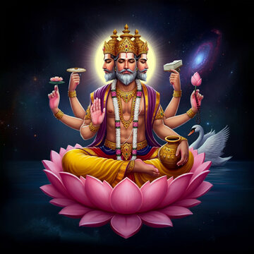
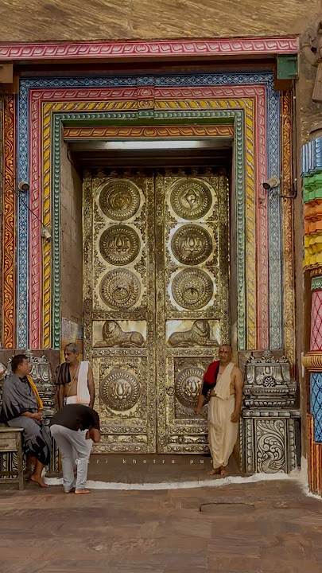

ଯାଞ୍ଚ କରୁଛୁ...

ଶ୍ରୀମନ୍ଦିରର ମୁଖ୍ୟ ଦ୍ୱାର ଖୋଲାଯାଏ। ପୁଜାରୀମାନେ ଭଗବାନ ଶ୍ରୀଜଗନ୍ନାଥ, ବଳଭଦ୍ର ଓ ସୁଭଦ୍ରାଙ୍କ ଦର୍ଶନ ପାଇଁ ଦ୍ୱାର ଖୋଲନ୍ତି। ଏହା ଦିନର ପ୍ରଥମ ସେବା ଅଟେ।
ଭଗବାନ ଶ୍ରୀଜଗନ୍ନାଥ, ବଳଭଦ୍ର ଓ ସୁଭଦ୍ରାଙ୍କ ମଙ୍ଗଳ ଆରତି କରାଯାଏ। ଏହା ହେଉଛି ଦିନର ପ୍ରଥମ ଆରତି, ଯେଉଁଥିରେ ମନ୍ତ୍ରୋଚ୍ଚାର, ଘଣ୍ଟା ଓ ଶଂଖଧ୍ୱନି ସହିତ ଭଗବାନଙ୍କର ପୂଜା ହୁଏ।
ମଙ୍ଗଳ ଆରତି ପରେ ଭଗବାନ ଶ୍ରୀଜଗନ୍ନାଥ, ବଳଭଦ୍ର ଓ ସୁଭଦ୍ରାଙ୍କୁ ବିଶ୍ରାମ ଦିଆଯାଏ। ଏହି ସମୟରେ ସେବକମାନେ ଭଗବାନଙ୍କର ଶୃଙ୍ଗାର ଆଦିର ପ୍ରସ୍ତୁତି କରନ୍ତି। ଏହି ସେବାଟି ହେଉଛି ଭଗବାନଙ୍କର ଆନ୍ତରିକ ବିଶ୍ରାମ ଓ ଆଗାମୀ ପୂଜା ପୂର୍ବରୁ ହେଉଥିବା ପ୍ରସ୍ତୁତି ସମୟ।
ଏହି ସମୟରେ ଭଗବାନ ଶ୍ରୀଜଗନ୍ନାଥ, ବଳଭଦ୍ର ଓ ସୁଭଦ୍ରାଙ୍କୁ ସ୍ନାନ କରାଯାଏ। ଦନ୍ତଧାବନ (ଦାନ୍ତ ସଫା କରିବା), ଜଳପାନ ଓ ଅନ୍ୟାନ୍ୟ ଦିନଚର୍ଯ୍ୟା କାର୍ଯ୍ୟ ପ୍ରତୀକାତ୍ମକ ଭାବେ ସମ୍ପନ୍ନ କରାଯାଏ। ଏହା ଭଗବାନଙ୍କର ବ୍ୟକ୍ତିଗତ ସକାଳ ଦିନଚର୍ଯ୍ୟା ଭାବେ ମନାଯାଏ।
ଅବକାଶ ସେବା ପରେ ଭଗବାନଙ୍କୁ ପୁନର୍ବାର ବିଶ୍ରାମ ଦିଆଯାଏ। ଏହି ସମୟରେ ପୁଜାରୀମାନେ ଭଗବାନଙ୍କର ପୁରୁଣା ବସ୍ତ୍ର ବଦଳାଇ ନୂତନ ବସ୍ତ୍ର ପିନ୍ଧାନ୍ତି। ଏହି ସେବାକୁ ଭଗବାନଙ୍କ ଶୃଙ୍ଗାର ପାଇଁ ପ୍ରସ୍ତୁତି ଭାବେ ଦେଖାଯାଏ।
ଏହି ସମୟରେ ଭଗବାନ ଶ୍ରୀଜଗନ୍ନାଥ, ବଳଭଦ୍ର ଓ ସୁଭଦ୍ରାଙ୍କୁ ଭବ୍ୟ ବସ୍ତ୍ର ଓ ଅଳଙ୍କାର ପିନ୍ଧାଯାଏ। ପୁଜାରୀମାନେ ଗଭୀର ଭକ୍ତି ଓ ସମ୍ମାନ ସହିତ ଭଗବାନଙ୍କ ଦିବ୍ୟ ଶୃଙ୍ଗାର କରନ୍ତି। ଏହି ସେବା ଭଗବାନଙ୍କ ଦିବ୍ୟ ରୂପକୁ ଭକ୍ତଙ୍କ ଦର୍ଶନ ଯୋଗ୍ୟ କରିବା ପାଇଁ କରାଯାଏ।
ଏହା ଏକ ବିଶେଷ ଯଜ୍ଞୀୟ କ୍ରିୟା ଯାହା ମନ୍ଦିର ଭିତରେ ସମ୍ପନ୍ନ ହୁଏ। ଏଥିରେ ଅଗ୍ନିକୁ ଆହୁତି ଦିଆଯାଏ, ଯାହା ମନ୍ଦିର ପରିବେଶକୁ ଶୁଦ୍ଧ ଓ ପବିତ୍ର କରିଥାଏ। ଏହି ପରମ୍ପରା ବେଦିକ ପଦ୍ଧତିଅନୁଯାୟୀ ଚାଲିଥାଏ ଓ ଏହା ଭଗବାନଙ୍କ ସୁରକ୍ଷା ଓ ସମସ୍ତ ବ୍ରହ୍ମାଣ୍ଡର କଲ୍ୟାଣ ପାଇଁ କରାଯାଏ।
ଏହି ସମୟରେ ଭଗବାନ ଶ୍ରୀଜଗନ୍ନାଥଙ୍କ ସମ୍ମୁଖରେ ସୂର୍ଯ୍ୟଦେବଙ୍କ ପୂଜା କରାଯାଏ। ପୁଜାରୀମାନେ ବେଦମନ୍ତ୍ର ସହିତ ସୂର୍ଯ୍ୟଙ୍କୁ ଅର୍ଘ୍ୟ ଦେଇଥାନ୍ତି, ଯାହା ଦ୍ୱାରା ଭଗବାନଙ୍କୁ ଉର୍ଜା ଓ ପ୍ରକାଶ ଦେଇଥିବା ସୂର୍ଯ୍ୟଙ୍କ ପ୍ରତି କୃତଜ୍ଞତା ଜଣାଯାଏ। ଏହି ପୂଜା ପ୍ରକୃତି ଓ ବ୍ରହ୍ମାଣ୍ଡୀୟ ଶକ୍ତିମାନ୍ୟଙ୍କ ପ୍ରତି ସମ୍ମାନର ପ୍ରତୀକ ଭାବେ ମନାଯାଏ।
ଏହି ସମୟରେ ମନ୍ଦିର ଦ୍ୱାରର ସୁରକ୍ଷା କରୁଥିବା ଦେବତାମାନେ, ଅର୍ଥାତ୍ ଜୟ ଓ ବିଜୟ ପରି ଦ୍ୱାରପାଳମାନଙ୍କର ପୂଜା କରାଯାଏ। ଏହି ସେବା ଭଗବାନଙ୍କ ପ୍ରାସାଦ (ମନ୍ଦିର) ର ସୁରକ୍ଷା ବ୍ୟବସ୍ଥା ଓ ଦିବ୍ୟତାକୁ ସମ୍ମାନ ଦେବା ପାଇଁ କରାଯାଏ। ଦ୍ୱାରପାଳମାନଙ୍କୁ ପୁଷ୍ପ, ଜଳ ଓ ମନ୍ତ୍ର ଦ୍ୱାରା ଶ୍ରଦ୍ଧାପୂର୍ବକ ପୂଜା କରାଯାଏ।
ଏହି ସେବା ଭଗବାନ୍ ଶ୍ରୀଜଗନ୍ନାଥଙ୍କର ପ୍ରଭାତକାଳୀନ ଭୋଜନ ସେବା ଅଟେ। ଏଥିରେ ଭଗବାନ୍ଙ୍କୁ ଫଳ, ଦୁଧ, ଦହି, ଲାଭା, ଖଜୁରି, ନଡିଆ, ଖୀର ଇତ୍ୟାଦି ହାଲୁକା ଓ ସାଦା ପଦାର୍ଥ ଅର୍ପଣ କରାଯାଏ। ଏହି ସେବା ଭଗବାନଙ୍କୁ ବାଳ ଗୋପାଳ ରୂପେ ଭୋଜନ କରୁଥିବାର ଭାବନାରେ କରାଯାଏ। ଏହାକୁ ଭଗବାନଙ୍କ ପ୍ରେମପୂର୍ଣ୍ଣ ଅହାର ବୋଲି ମନାଯାଏ।
ଏହା ଭଗବାନ୍ ଶ୍ରୀଜଗନ୍ନାଥଙ୍କ ଦିନର ମୁଖ୍ୟ ଭୋଗ ସେବା ଅଟେ। ଏହି ସମୟରେ ଭଗବାନ୍ଙ୍କୁ ବିଭିନ୍ନ ପ୍ରକାରର ବ୍ୟଞ୍ଜନ ଅର୍ପଣ କରାଯାଏ, ଯାହାକୁ "ସକାଳ ଧୂପ ଭୋଗ" ବୋଲି କୁହାଯାଏ। ଏଥିରେ ଚାଉଳ, ଡାଲି, ତରକାରୀ, ମିଠା ଇତ୍ୟାଦି ପାରମ୍ପରିକ ଓ ଶୁଦ୍ଧ ବ୍ୟଞ୍ଜନ ଅନ୍ତର୍ଭୁକ୍ତ। ଭୋଗ ଅର୍ପଣ ପରେ ମନ୍ଦିରରେ ମଧୁର ଧୂପ ଓ ଦୀପ ସହିତ ବିଶେଷ ପୂଜା କରାଯାଏ।
ସକାଳ ଧୂପ ଭୋଗ ପରେ ଭଗବାନ୍ଙ୍କୁ କିଛି ସମୟ ପାଇଁ ବିଶ୍ରାମ ଦିଆଯାଏ। ଏହି ସମୟରେ ପୁଜାରୀମାନେ ଭଗବାନ୍ଙ୍କ ବସ୍ତ୍ର ପରିବର୍ତ୍ତନ କରନ୍ତି ଏବଂ ତାଙ୍କୁ ପୁନଃ ତାଜାପନ୍ନ କରିବା ପାଇଁ ଆବଶ୍ୟକ ସେବା ସମ୍ପାଦନ କରନ୍ତି। ଏହି ସେବା, ଭଗବାନ୍ଙ୍କ ବିଶ୍ରାମ ଓ ପରବର୍ତ୍ତୀ ପୂଜା ପାଇଁ ପ୍ରସ୍ତୁତି ନିମନ୍ତେ କରାଯାଏ।
ଏହି ସମୟରେ ଭଗବାନ୍ ଶ୍ରୀଜଗନ୍ନାଥଙ୍କ ପାଇଁ "ଭୋଗମଣ୍ଡପ" ନାମକ ବିଶେଷ ସ୍ଥାନରେ ଏକ ଭବ୍ୟ ଏବଂ ବିସ୍ତୃତ ଭୋଗ ଅର୍ପଣ କରାଯାଏ। ଏହି ଭୋଗ ସାଧାରଣ ଭକ୍ତମାନେ ପାଇଁ ମଧ୍ୟ ଅର୍ପଣ ସ୍ୱରୂପ ଥାଏ, ଯାହା ପରେ ମହାପ୍ରସାଦ ରୂପେ ବଣ୍ଟନ କରାଯାଏ। ଭୋଗମଣ୍ଡପ ସେବାରେ ବହୁ ପରିମାଣରେ ବିଭିନ୍ନ ପ୍ରକାର ବ୍ୟଞ୍ଜନ ଯଥା ଖେଚୁଡ଼ି, ଡାଲି, ତରକାରୀ, ମିଠା ଇତ୍ୟାଦି ଅନ୍ତର୍ଭୁକ୍ତ ଥାଏ। ଏହି ସେବା ଅତ୍ୟନ୍ତ ଶ୍ରଦ୍ଧା ଓ ବିଧିପୂର୍ବକ ସମ୍ପନ୍ନ କରାଯାଏ।
ଏହା ଶ୍ରୀମନ୍ଦିରର ସବୁଠୁ ଗୁରୁତ୍ୱପୂର୍ଣ୍ଣ ଏବଂ ବ୍ୟାପକ ଭୋଗ ସେବା। ଏହି ସମୟରେ ଭଗବାନ ଶ୍ରୀଜଗନ୍ନାଥ, ବଳଭଦ୍ର ଓ ସୁଭଦ୍ରାଙ୍କୁ ମଧ୍ୟାହ୍ନର ପ୍ରଧାନ ଭୋଗ ଅର୍ପିତ କରାଯାଏ। ଭୋଗରେ ଅନେକ ଶୁଦ୍ଧ ଶାକାହାରୀ ବ୍ୟଞ୍ଜନ ଥାଏ, ଯାହା ପାରମ୍ପରିକ ପ୍ରଣାଳୀ ଅନୁଯାୟୀ ମନ୍ଦିରର ରୋସୋଇଘରରେ ପକାଯାଏ। ଏହି ସେବା ସମୟରେ ମନ୍ତ୍ରୋଚ୍ଚାର, ଧୂପ, ଦୀପ ଓ ପୂଜା ବିଧି ସହିତ ଭଗବାନଙ୍କୁ ଭୋଗ ଅର୍ପଣ କରାଯାଏ। ଏହି ସେବା ପରେ ଭଗବାନ ବିଶ୍ରାମ କରନ୍ତି।
ଏହି ସେବା ହେଉଛି ଭଗବାନ୍ ଶ୍ରୀଜଗନ୍ନାଥ, ବଳଭଦ୍ର ଓ ସୁଭଦ୍ରା ଠାକୁରାଣୀଙ୍କ ଦିନ ଶେଷ ଆରତି। ସନ୍ଧ୍ୟା ବେଳେ ଦୀପ, ଧୂପ, ଶଂଖ ଓ ଘଂଟା ଧ୍ୱନି ସହ ଭଗବାନଙ୍କ ଭବ୍ୟ ଆରତି କରାଯାଏ। ଏହି ଆରତି ଦିନବ୍ୟାପୀ ସେବାର ସମାପନର ଭାବନା ସହ ହୁଏ ଏବଂ ଭଗବାନଙ୍କୁ ପୁନଃ ଭକ୍ତଙ୍କ ଦର୍ଶନ ପାଇଁ ଶୃଙ୍ଗାର କରାଯାଏ। ଏହି ସମୟରେ ମନ୍ଦିରର ପରିବେଶ ଅତ୍ୟନ୍ତ ଭକ୍ତିମୟ ଓ ଶାନ୍ତିପୂର୍ଣ୍ଣ ହୁଏ।
ଏହି ସେବାରେ ଭଗବାନ ଶ୍ରୀଜଗନ୍ନାଥ, ବଳଭଦ୍ର ଓ ସୁଭଦ୍ରାଙ୍କୁ ସନ୍ଧ୍ୟା ସମୟର ଭୋଗ ଅର୍ପଣ କରାଯାଏ। ଏଥିରେ ଭିନ୍ନ ଭିନ୍ନ ପ୍ରକାରର ଖାଦ୍ୟ ପଦାର୍ଥ — ଭାତ, ଡାଲି, ତରକାରୀ ଓ ମିଠା ଦିଆଯାଏ। ଏହି ସମୟରେ ଧୂପ, ଦୀପ ଓ ମନ୍ତ୍ରୋଚ୍ଚାର ସହିତ ପୂଜା ପୂର୍ଣ୍ଣ କରାଯାଏ। ଏହା ଦିନର ଶେଷ ଭୋଗ ସେବା ବୋଲି ଗଣାଯାଏ ଏବଂ ଏହା ପରେ ଭଗବାନଙ୍କୁ ବିଶ୍ରାମ ପାଇଁ ନିଆଯାଏ।
ସନ୍ଧ୍ୟା ଧୂପ ପରେ ଭଗବାନଙ୍କୁ ବିଶ୍ରାମ ପାଇଁ ପ୍ରସ୍ତୁତ କରାଯାଏ। ଏହି ସେବାରେ ଭଗବାନ ଶ୍ରୀଜଗନ୍ନାଥ, ବଳଭଦ୍ର ଓ ସୁଭଦ୍ରାଙ୍କ ପୋଷାକ ପରିବର୍ତ୍ତନ କରାଯାଏ ଓ ତାଙ୍କୁ ଶୀତଳତା ଦେବା ପାଇଁ ଚନ୍ଦନ ଲେପ ଲଗାଯାଏ। ଏହି ସେବା ଭଗବାନଙ୍କୁ ଶାନ୍ତି ଓ ବିଶ୍ରାମ ଦେବା ଉଦ୍ଦେଶ୍ୟରେ କରାଯାଏ। ଏହା ପରେ ଭଗବାନଙ୍କୁ ରାତି ବିଶ୍ରାମ ପୂର୍ବରୁ ଶେଷ ଭୋଗ ଅର୍ପଣ କରାଯାଏ।
ଏହା ଦିନର ଶେଷ ଓ ସବୁଠୁ ଭବ୍ୟ ଶୃଙ୍ଗାର ସେବା ଅଟେ। ଏହି ସମୟରେ ଭଗବାନ ଶ୍ରୀଜଗନ୍ନାଥ, ବଳଭଦ୍ର ଓ ସୁଭଦ୍ରାଙ୍କୁ ରତ୍ନ ଜଡିତ ବସ୍ତ୍ର, ଆଭୂଷଣ, ଫୁଲମାଳା ଓ ଚନ୍ଦନ ଓଡ଼ାଇ ବହୁତ ଶୋଭାମୟ ଭାବେ ଶୃଙ୍ଗାର କରାଯାଏ। ଏହାକୁ "ବଡ଼ ସିଂହାର ବେଶ" କୁହାଯାଏ, ଯାହା ଭଗବାନଙ୍କ ଦିବ୍ୟ ଓ ରାଜସିକ ସ୍ୱରୂପ ଅଟେ। ଏହି ଶୃଙ୍ଗାର ବିଶେଷ ମନ୍ତ୍ର ଓ ଭକ୍ତି ଭାବରେ ସମ୍ପନ୍ନ ହୁଏ, ଏବଂ ଏହା ପରେ ଭଗବାନଙ୍କୁ ରାତ୍ରି ବିଶ୍ରାମ ପାଇଁ ପ୍ରସ୍ତୁତ କରାଯାଏ।
ବଡ଼ ସିଂହାର ବେଶ ପରେ ଭଗବାନ ଶ୍ରୀଜଗନ୍ନାଥ, ବଳଭଦ୍ର ଓ ସୁଭଦ୍ରାଙ୍କୁ ଦିନର ଶେଷ ଭୋଗ ଅର୍ପିତ କରାଯାଏ, ଯାହାକୁ ବଡ଼ ସିଂହାର ଧୂପ ବୋଲି କୁହାଯାଏ। ଏହି ସେବାରେ ସ୍ବାଦିଷ୍ଟ ଓ ଶୁଦ୍ଧ ବ୍ୟଞ୍ଜନ ଭଗବାନଙ୍କୁ ଅର୍ପିତ ହୁଏ। ଧୂପ, ଦୀପ ଓ ମନ୍ତ୍ର ସହିତ ପୂଜା କରି ଭଗବାନଙ୍କୁ ପୂର୍ଣ୍ଣ ଶ୍ରଦ୍ଧା ସହିତ ଭୋଗ ଦିଆଯାଏ। ଏହା ଦିନର ଶେଷ ପୂଜା ଅଟେ। ଏହା ପରେ ଭଗବାନ ରାତିରେ ଶୟନ ପାଇଁ ନିଜ ଶୟନସ୍ଥଳକୁ ଯାଆନ୍ତି।
ଏହା ଦିନର ଶେଷ ସେବା ଯେଉଁଥିରେ ଭଗବାନ ଶ୍ରୀଜଗନ୍ନାଥ, ବଳଭଦ୍ର ଓ ସୁଭଦ୍ରାଙ୍କ ଶୟନ ବିଗ୍ରହଙ୍କୁ ଭଣ୍ଡାର ଘରରୁ ରତ୍ନବେଦୀକୁ ଆଣି ଶ୍ରୀଜଗନ୍ନାଥଙ୍କ ନିକଟରେ ରଖାଯାଏ। ଭଗବାନଙ୍କ ଶୟନ ପାଇଁ ଖଟ ପ୍ରସ୍ତୁତ କରାଯାଏ। ଏହି ସେବାକୁ "ଖଟସେଜ ଲାଗି" ବୋଲାଯାଏ, ଏବଂ "ପହୁଡ଼" ର ଅର୍ଥ ହେଉଛି ଭଗବାନଙ୍କର ବିଶ୍ରାମ। ପୁଜାରୀମାନେ ଭଗବାନଙ୍କୁ ରାତ୍ରି ବିଶ୍ରାମ ପାଇଁ ବିଧିପୂର୍ବକ ଶୟନ କରାନ୍ତି। ମନ୍ତ୍ରୋଚ୍ଚାର, ଶାନ୍ତି ପାଠ ଓ ଶୟନଗୀତ ସହିତ ଭଗବାନଙ୍କୁ ବିଶ୍ରାମ ଦିଆଯାଏ। ଏହା ପରେ ମନ୍ଦିରର ଦ୍ୱାର ବନ୍ଦ କରାଯାଏ ଏବଂ ସେବା କାର୍ଯ୍ୟ ସମାପ୍ତ ହୁଏ।